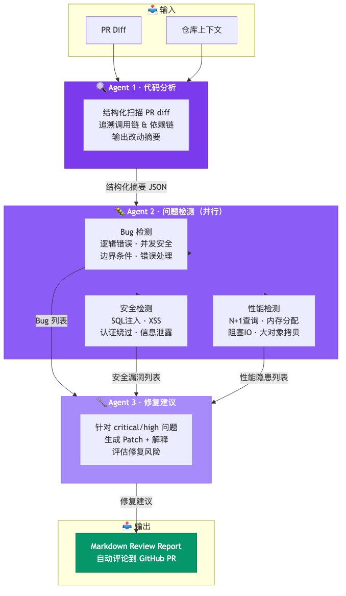
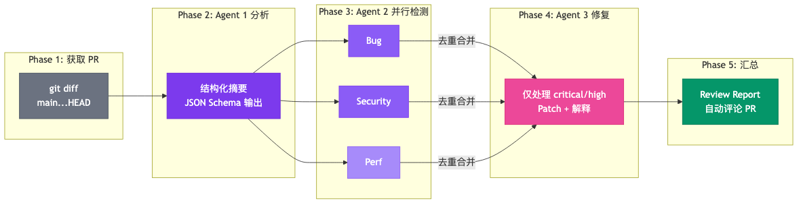

完整 Workflow 脚本 + MCP 工具 + 踩坑复盘，可直接复用
先说结论。搭了一个三 Agent 流水线代码审查系统，实测数据：
| 指标 | 数值 |
|---|---|
| 检出率 | 91%（10 次 Review 与两位 Senior 工程师交叉对比） |
| 误报率 | 8%（远低于单 Agent 方案的 25%） |
| 成本 | $0.03 / 次（人工 Review 约 $25–50） |
| 耗时 | 45 秒（人工 Review 约 15–30 分钟） |
真正的价值不在速度和成本——在它发现了人工 Review 容易漏掉的东西：
下面把这套系统的完整实现还原出来——架构设计、Workflow 脚本、MCP 工具、成本分析、踩坑复盘。
如果你读过我之前写的 Dynamic Workflows 解读和 Agent 工作流拆解实录，这篇是它们的落地版：一个完整可运行的项目。
📦 GitHub 仓库： https://github.com/Aias00/agent-skills/tree/main/content/multi-agent-code-review-system
所有代码、配置、Prompt 模板都可以直接复用。看完这篇文章，你就能在自己的项目里跑起来。
想先看效果？
git clone https://github.com/Aias00/agent-skills /tmp/agent-skills
cp /tmp/agent-skills/content/multi-agent-code-review-system/code-review.workflow.js \
/path/to/your-project/.claude/workflows/
export ANTHROPIC_BASE_URL=https://api.deepseek.com/anthropic
export ANTHROPIC_AUTH_TOKEN=<你的 DeepSeek API Key>
export ANTHROPIC_DEFAULT_SONNET_MODEL=deepseek-v4-pro[1m]
export ANTHROPIC_DEFAULT_HAIKU_MODEL=deepseek-v4-flash
cd /path/to/your-project
claude
> /workflow code-review
Workflow 会自动获取当前分支的 diff，跑三 Agent 流水线，输出 Review Report。完整配置（GitHub MCP、Lint MCP、知识库 MCP）见第六节和第九节。
git push → Webhook 触发
→ Agent 1：代码分析（结构化扫描 PR diff，输出改动摘要）
→ Agent 2：问题检测（Bug / 安全 / 性能，输出问题列表）
→ Agent 3：修复建议（针对每个问题生成 Patch 建议）
→ 汇总为 Markdown Review Report
→ 自动评论到 GitHub PR
测试环境：中等规模 Go 项目（约 5 万行代码），PR 平均 187 行 diff、15 个文件。检测率和误报率来自 10 次 Review 与两位 Senior 工程师交叉对比，样本较小，仅作参考——你的项目、语言、团队规范不同，数字会有差异。

先看一组对比（同一个项目上分别测试）：
| 方案 | 检出率 | 误报率 | 成本 | 耗时 |
|---|---|---|---|---|
| 单 Agent（超长 Prompt） | 65% | 25% | $0.02 | 30s |
| 三 Agent 流水线 | 91% | 8% | $0.03 | 45s |
| 人工 Review（Senior） | ~80% | <5% | $25–50 | 15–30min |
单 Agent 检出率低、误报率高，根因有三个：
问题 1：上下文过载。 单 Agent 要同时处理 PR diff + 仓库代码 + 调用链 + 业务文档 + 编码规范 + 历史 Bug 库。一个 200K 窗口塞不下这么多信息，Agent 只能选择性读取——漏掉关键文件，检出率直接下降。三 Agent 方案中，Agent 1 只读 PR diff + 调用链（聚焦「改了什么」），Agent 2 拿到已浓缩的结构化摘要，每个 Agent 的上下文窗口绰绰有余。
问题 2：目标冲突。「描述代码」和「找出 Bug」是两种思维模式。同一个 Agent 既分析又检测，容易「自己认可自己」——分析时觉得逻辑合理，检测时就不会判定为 Bug。三 Agent 方案强制职责分离：Agent 1 禁止评价，Agent 2 禁止修复，Agent 3 禁止重新检测。
问题 3：误报失控。 单 Agent 常见误报：把 Go 标准 if err != nil { return err } 标为 Bug、把接口修改标为破坏性变更、把性能优化当「不必要的复杂度」。三 Agent 先理解改动意图再做判断，误报率从 25% 降到 8%。
结论： 三 Agent 不是「三个比一个聪明」——是职责拆分让每个 Agent 聚焦单一目标，减少信息过载和目标冲突。
这三个 Agent 的信息流向：
PR Diff + 仓库上下文
│
▼
┌─────────────────┐
│ Agent 1 │
│ 代码分析 │
│ 输出：结构化摘要 │
└────────┬────────┘
│ 改动摘要
▼
┌─────────────────┐
│ Agent 2 │
│ 问题检测 │
│ 输出：问题列表 │
└────────┬────────┘
│ 问题列表 + 上下文
▼
┌─────────────────┐
│ Agent 3 │
│ 修复建议 │
│ 输出：Patch + 解释 │
└────────┬────────┘
│
▼
Review Report
每个 Agent 的输入是上一个 Agent 的结构化输出。信息在管道里逐层浓缩，每个 Agent 只需要盯住自己的子任务。
职责： 读懂 PR 改了什么，输出结构化摘要。不找 bug，只描述事实。
输入： git diff + 仓库关键文件（接口定义、调用链）
输出 Schema：
{
"summary": "本次 PR 将用户权限判断从硬编码 role 检查迁移到 RBAC 策略引擎",
"changedFiles": [
{
"path": "internal/auth/authz.go",
"changeType": "added",
"purpose": "新增 authz.Check() 核心方法",
"riskLevel": "high",
"callers": ["handler/user.go:45", "service/order.go:120"],
"dependencies": ["internal/auth/policy.go"]
}
],
"affectedModules": ["auth", "handler", "service"],
"crossCuttingConcerns": [
"所有 handler 层权限判断统一走 authz.Check",
"测试文件需要同步更新 mock"
]
}
核心 Prompt 设计：
你是一个代码分析专家。你的任务是**描述**代码改了什么，而不是评价改得好不好。
## 输入
你将收到一个 git diff 和相关文件的上下文。
## 分析要求
1. 对每个改动文件，识别：
- 改了什么（新增/修改/删除）
- 这段代码的业务目的
- 谁调用了它（向上追溯调用链）
- 它依赖了什么（向下追溯依赖链）
- 改动风险等级（high/medium/low）
2. 识别跨文件的关联改动——如果一个文件的改动会影响另一个文件的假设，请明确标注。
3. 输出必须严格遵循 JSON Schema。不要输出多余的解释。
## 禁止
- 不要评价代码质量
- 不要提修改建议
- 不要猜测作者意图（不确定就问，标记为 "uncertain"）
设计要点：
grep 和 read 工具来追溯调用关系职责： 基于 Agent 1 的摘要 + 原始代码，找出具体问题。多个检测维度并行运行。
输入： Agent 1 的结构化摘要 + 改动文件的完整代码
检测维度（每个维度独立运行）：
| 维度 | 检测内容 | 模型 |
|---|---|---|
| Bug | 逻辑错误、边界条件、nil 指针、并发安全 | DeepSeek V4-Pro |
| Security | SQL 注入、XSS、认证绕过、敏感信息泄露 | DeepSeek V4-Pro |
| Performance | N+1 查询、不必要的内存分配、阻塞调用 | DeepSeek V4-Flash |
三个维度并行执行，互不干扰。每个维度独立输出检测结果。
Bug 检测 Prompt：
你是一个专业的 Bug 猎手。你的任务是在给定代码中找到**可能导致生产事故的逻辑错误**。
## 上下文
你会收到：
1. 代码分析 Agent 的改动摘要（理解这段代码的目的）
2. 改动文件的完整代码
## 检测清单（按优先级）
1. **边界条件遗漏**
- 空切片/空 map 的处理
- 整数溢出/下溢
- 字符串截断（多字节字符）
- 时间边界（时区、闰秒）
2. **并发安全**
- 共享变量无保护
- goroutine 泄漏（无 ctx 取消）
- channel 未关闭导致死锁
- map 并发读写
3. **错误处理缺陷**
- error 被吞掉（`_ = err` 或无接收）
- 错误返回后继续使用返回值
- defer 中的错误未处理
4. **逻辑缺陷**
- 条件判断反了（> vs >=）
- 提前 return 导致后续逻辑跳过
- 类型断言未检查 ok
## 输出格式
每个问题输出：
- severity: critical / high / medium / low
- file + 行号
- 问题描述（一句话）
- 触发条件（什么输入/状态会触发）
- 影响（最坏后果是什么）
不要输出「建议怎么修」——那是下一个 Agent 的工作。
设计要点：
职责： 针对 Agent 2 找出的每个问题，生成具体的 Patch 建议和解释。
输入： Agent 2 的问题列表 + Agent 1 的改动摘要 + 原始代码
输出格式：
{
"fixes": [
{
"issueRef": "BUG-001",
"patch": "```diff\n- if user.Role == \"admin\"\n+ if authz.Check(user, \"admin\", resource)\n```",
"explanation": "原有的硬编码角色检查绕过了策略引擎，导致策略变更不生效。改为调用 authz.Check() 统一走 RBAC。",
"riskOfFix": "low",
"testSuggestion": "添加测试用例：普通用户直接调用此接口应返回 403"
}
]
}
核心 Prompt 设计：
你是代码修复专家。针对每个检测到的问题，生成精确的修复方案。
## 修复原则
1. **最小改动**：用最少代码修改解决问题，不要重构整个函数
2. **不引入新问题**：修复一个 bug 时不能创建新的 bug
3. **保持风格一致**：代码风格与周围代码保持统一
4. **给出测试建议**：每个修复附一个最小的测试用例描述
## 输出要求
- patch 必须是 unified diff 格式
- explanation 必须是中文（方便国内团队直接讨论）
- riskOfFix 评估修复本身的风险（low/medium/high）
- 如果无法确定最佳修复方案，列出 2-3 个选项并标注推荐度
设计要点：
下面是最核心的部分——怎么把三个 Agent 串成一条可靠的流水线。
| 维度 | 动态 Workflow | 静态 Harness 脚本 |
|---|---|---|
| 灵活性 | 每次根据任务调整 | 固定流程 |
| Token 消耗 | 高（每次生成编排） | 低（编排写一次） |
| 稳定性 | 可能漂移 | 确定性强 |
| 适合场景 | 一次性复杂任务 | 重复性流程 ✅ |
代码审查是高频重复任务——每个 PR 都要跑。这种场景用静态 Harness 脚本更合适。
完整脚本（含 Prompt 模板和 JSON Schema）见 GitHub，这里展示骨架和关键设计：
// code-review.workflow.js —— 放到 .claude/workflows/ 下
export const meta = {
name: 'code-review',
description: '三 Agent 流水线代码审查：分析 → 检测 → 修复建议',
phases: [
{ title: 'Analyze', detail: 'Agent 1：结构化代码分析' },
{ title: 'Detect', detail: 'Agent 2：多维度并行检测（Bug/安全/性能）' },
{ title: 'Fix', detail: 'Agent 3：生成修复建议' },
{ title: 'Report', detail: '汇总输出 Review Report' }
]
}
// Phase 1 + 2：获取 PR diff → Agent 1 结构化分析
phase('Analyze')
const prInfo = await agent(`获取当前分支 git diff main...HEAD`)
const analysis = await agent(`你是代码分析专家……`, {
model: 'sonnet',
schema: { /* 强制输出 { summary, changedFiles[], affectedModules[] } */ }
})
// Phase 3：Agent 2 — 三维度并行检测
phase('Detect')
const DETECTION_DIMENSIONS = [
{ key: 'bugs', prompt: '找出所有逻辑错误……', model: 'sonnet' },
{ key: 'security', prompt: '找出所有安全漏洞……', model: 'sonnet' },
{ key: 'performance', prompt: '找出所有性能隐患……', model: 'haiku' }
]
const detectionResults = await pipeline(
DETECTION_DIMENSIONS,
d => agent(d.prompt, { label: `detect:${d.key}`, model: d.model, schema: ISSUE_SCHEMA }),
result => { /* 按 文件+行号 去重 */ return { issues: deduped } }
)
// Phase 4：Agent 3 — 只修 critical/high
phase('Fix')
const fixes = await pipeline(
allDetectedIssues.filter(i => i.severity === 'critical' || i.severity === 'high'),
issue => agent(`你是代码修复专家……`, { label: `fix:${issue.id}`, model: 'sonnet', schema: FIX_SCHEMA })
)
// Phase 5：汇总 Report
phase('Report')
const report = await agent(`基于分析、检测、修复建议，生成 Review Report……`, { model: 'sonnet' })
return { analysis, issues, fixes, report }
📦 完整脚本（含完整 Prompt 和 JSON Schema）：code-review.workflow.js
核心设计要点：
schema 参数强制输出符合 JSON Schema 的结构化数据，下游 Agent 可靠消费sonnet（→ DeepSeek V4-Pro），性能检测用 haiku（→ DeepSeek V4-Flash），成本差 3 倍但性能检测对推理深度要求低
将脚本保存到 .claude/workflows/code-review.workflow.js，然后在 Claude Code 中运行：
/workflow code-review
或者在 PR 提交后，用 Hook 自动触发：
{
"hooks": {
"PostToolUse": [
{
"matcher": "Bash",
"hooks": [
{
"type": "command",
"command": "if echo \"$CLAUDE_TOOL_INPUT\" | grep -q 'git push'; then claude -p '/workflow code-review' --output-format markdown > review-report.md; fi"
}
]
}
]
}
}
Claude Code 内置的 Bash、Read、Grep 已经够 Agent 做很多事。但要把它真正嵌进开发流程，还需要三个 MCP 工具。
让 Agent 能直接在 PR 下面评论，而不是输出到终端然后手动粘贴。
安装和启动：
export GITHUB_PERSONAL_ACCESS_TOKEN=<你的 GitHub Token>
npx -y @modelcontextprotocol/server-github --help
注册到 Claude Code（~/.claude/config.json）：
{
"mcpServers": {
"github": {
"command": "npx",
"args": ["-y", "@modelcontextprotocol/server-github"],
"env": {
"GITHUB_PERSONAL_ACCESS_TOKEN": "${GITHUB_TOKEN}"
}
}
}
}
在 Workflow 中使用：
// 在 Phase 5 之后追加
phase('Comment')
await agent(
`将以下 Review Report 作为评论发布到当前 PR：
${report}
使用 GitHub MCP 工具的 create_issue_comment 方法。
PR 编号从 git 分支名或 git log 中获取。`,
{ phase: 'Comment' }
)
有些检查（代码规范、复杂度阈值）不需要大模型判断，用规则引擎更快更准。
启动： pip install fastmcp && python lint-server.py，然后在 config.json 中注册 { "command": "python", "args": ["lint-server.py"] }。注意 ESLint 需要 Node.js 环境。
from fastmcp import FastMCP
mcp = FastMCP("Lint Checker")
@mcp.tool()
def check_complexity(file_path: str) -> dict:
"""检查单个文件的圈复杂度"""
import subprocess
result = subprocess.run(
["radon", "cc", file_path, "-s", "-n", "B"],
capture_output=True, text=True
)
return {
"file": file_path,
"over_threshold": len(result.stdout.splitlines()),
"details": result.stdout
}
@mcp.tool()
def run_eslint(file_path: str) -> dict:
"""对指定文件运行 ESLint"""
import subprocess
result = subprocess.run(
["npx", "eslint", file_path, "--format", "json"],
capture_output=True, text=True
)
issues = __import__('json').loads(result.stdout or "[]")
return {
"file": file_path,
"errorCount": sum(1 for i in issues if i.get("severity") == 2),
"warningCount": sum(1 for i in issues if i.get("severity") == 1),
"issues": issues
}
mcp.run()
单独做 Lint MCP 的原因：
- 圈复杂度和 ESLint 规则不需要 LLM 推理，工具跑一遍更快
- 把确定性检查从 Agent 2 中剥离，Agent 2 只盯「需要推理」的问题
- 省 Token——静态分析结果直接注入上下文，比让 Agent 读代码再分析便宜得多
团队通常有自己的编码规范和常见 Bug 清单。把这份知识做成 MCP Server，让 Agent 在审查时自动参考。
启动： python knowledge-mcp.py，在 config.json 注册同上。修改 RULES 和 KNOWN_BUGS 列表即可适配你团队的规范。
from fastmcp import FastMCP
import json
mcp = FastMCP("Team Knowledge Base")
RULES = [
{
"id": "RULE-001",
"category": "error-handling",
"pattern": "所有公开函数必须返回 error 作为最后一个返回值",
"severity": "high",
"example": "func DoThing() error // ← 好的\nfunc DoThing() // ← 违规"
},
{
"id": "RULE-002",
"category": "concurrency",
"pattern": "goroutine 必须接收 context.Context 用于取消",
"severity": "critical",
"example": "go worker(ctx, ch) // ← 好的\ngo worker(ch) // ← 可能泄漏"
},
{
"id": "RULE-003",
"category": "database",
"pattern": "所有数据库查询必须有超时控制",
"severity": "critical",
"example": "db.QueryContext(ctx, sql, args...) // ← 好的\ndb.Query(sql, args...) // ← 违规"
}
]
KNOWN_BUGS = [
{
"id": "BUG-ARCH-001",
"title": "map 并发写导致 panic",
"pattern": "多个 goroutine 并发写同一个 map 且未加锁",
"occurrence": 5,
"fix": "使用 sync.Map 或 sync.RWMutex"
},
{
"id": "BUG-ARCH-002",
"title": "defer 中 err 检查失效",
"pattern": "defer 中调用的函数返回 error 但未被检查",
"occurrence": 3,
"fix": "defer 中使用闭包 + 命名返回值捕获 error"
}
]
@mcp.tool()
def search_rules(category: str = None) -> list:
"""搜索团队编码规范，可按分类过滤"""
if category:
return [r for r in RULES if r["category"] == category]
return RULES
@mcp.tool()
def search_known_bugs(keyword: str = None) -> list:
"""搜索历史 Bug 库，用于模式匹配"""
if not keyword:
return KNOWN_BUGS
keyword = keyword.lower()
return [b for b in KNOWN_BUGS
if keyword in b["title"].lower()
or keyword in b["pattern"].lower()]
mcp.run()
把知识库 MCP 嵌入 Agent 2：
// 在 Agent 2 的 Bug 检测 Prompt 中加入：
const teamRules = await agent(`使用 knowledge-base MCP 的 search_rules 工具，
获取所有 critical 和 high 级别的编码规范。
返回规则列表。`)
const knownBugs = await agent(`使用 knowledge-base MCP 的 search_known_bugs 工具，
获取所有历史 Bug 记录。返回列表。`)
// 然后将 teamRules 和 knownBugs 注入 Agent 2 的 Prompt
const bugsPrompt = `
${BASE_BUG_PROMPT}
## 团队编码规范（必须遵守）
${JSON.stringify(teamRules, null, 2)}
## 历史 Bug 模式（重点排查）
${JSON.stringify(knownBugs, null, 2)}
如果你的检测结果命中了上述任何一条规则或历史 Bug 模式，
请在输出的 description 中明确标注对应的 RULE-ID 或 BUG-ID。`
我在一个中等规模 Go 项目（约 5 万行代码）上跑了 10 次 Review，统计如下：
实验条件：
- PR 大小：平均 187 行 diff（15 个文件）
- 模型：Bug/安全用 DeepSeek V4-Pro，性能用 DeepSeek V4-Flash
- Claude Code 通过 Anthropic 兼容协议对接 DeepSeek API（配置见下文）
- 单次运行包含完整的「分析 → 检测 → 修复建议 → 评论」流程
成本明细（单次平均）：
| 阶段 | Agent | 模型 | Input Tokens | Output Tokens | 成本 |
|---|---|---|---|---|---|
| PR 信息获取 | Main | V4-Pro | 2,000 | 500 | $0.001 |
| 代码分析 | Agent 1 | V4-Pro | 15,000 | 2,000 | $0.008 |
| Bug 检测 | Agent 2a | V4-Pro | 12,000 | 1,500 | $0.007 |
| 安全检测 | Agent 2b | V4-Pro | 10,000 | 800 | $0.005 |
| 性能检测 | Agent 2c | V4-Flash | 8,000 | 400 | $0.001 |
| 修复建议（平均 3 个高危） | Agent 3 × 3 | V4-Pro | 6,000 | 1,200 | $0.004 |
| Report 生成 | Main | V4-Pro | 8,000 | 1,500 | $0.005 |
| 合计 | ~61,000 | ~7,900 | ~$0.03 |
注：成本基于 2026 年 6 月 DeepSeek 官方 API 定价（V4-Pro：$0.435/$0.87 每百万 input/output token；V4-Flash：$0.14/$0.28）。实际价格以 api-docs.deepseek.com 为准。对比 Claude Sonnet 4.6（$3/$15）同流程约 $0.21，DeepSeek 成本约为 1/7。
DeepSeek 接入配置：
Claude Code 原生支持 Anthropic 兼容协议，通过环境变量即可指向 DeepSeek API：
export ANTHROPIC_BASE_URL=https://api.deepseek.com/anthropic
export ANTHROPIC_AUTH_TOKEN=<你的 DeepSeek API Key>
export ANTHROPIC_DEFAULT_SONNET_MODEL=deepseek-v4-pro[1m]
export ANTHROPIC_DEFAULT_HAIKU_MODEL=deepseek-v4-flash
Workflow 脚本里的 model: 'sonnet' 和 model: 'haiku' 无需改动，Claude Code 会自动映射到 DeepSeek 模型。
| 方式 | 时间 | 金钱成本 | 覆盖度 |
|---|---|---|---|
| 人工（Senior） | 15-30 min | ~$25-50（按$100/h 计） | 取决于经验和精力 |
| AI 三 Agent | ~45 sec | ~$0.03 | 固定检测清单，不疲劳 |
| AI + 人工 | 5-10 min | ~$10 | AI 扫盲 + 人判关键 |
最佳实践是 AI + 人工：
- AI 三 Agent 流水线做第一轮全量扫描
- 人工只看 AI 标出来的 critical/high 问题，快速判断真假
- 中低风险问题直接看汇总，不用逐行读
git diff 只传改动文件的接口定义，不需要整个仓库。用 grep + read 按需获取现象： Bug 检测 Agent 频繁报告「错误处理不当」，实际只是 Go 标准写法 if err != nil { return err }。
根因： Prompt 中只说了「检查错误处理缺陷」，Agent 过度敏感，把标准模式也当问题了。
解法： 在 Bug 检测 Prompt 中加入正例 + 负例：
## 不是 Bug 的情况（不要报告）
1. Go 标准错误处理：`if err != nil { return err }` 或 `if err != nil { return fmt.Errorf("...: %w", err) }`
2. 显式的错误忽略且有注释说明：`//nolint:errcheck` 或 `// safe to ignore because ...`
3. defer 中调用的 Close() 错误被显式忽略（Go 惯用法）
## 是 Bug 的情况（请报告）
1. `_ = err` 或 `err` 赋值后无后续检查
2. 错误返回后继续使用了可能为空的返回值
3. defer 中的 recover() 吞掉了 panic 且未记录日志
现象： Agent 1 的 input token 达到了 120K，一次 Review 花了 $0.08。
根因： Prompt 中写了「读取所有相关文件」，Agent 用 find . -name "*.go" | xargs cat 把整个仓库吞进去了。
解法： 严格限定上下文范围：
## 上下文获取策略
1. 只读取 git diff 中出现的文件
2. 对于每个改动文件，只 grep 它的调用者（被谁 import），不递归
3. 最多读取 5 个关联文件
4. 如果关联文件超过 5 个，只读接口定义（函数签名 + 注释），不读实现
效果： Input token 从 120K 降到 15K，成本降到 1/8，且分析质量没有下降。
现象： Agent 2 三个维度并行跑完后，合并结果时报 undefined is not iterable。
根因： Bug 检测返回 { dimension: "bugs", issues: [...] }，但性能检测返回 { dimension: "performance", findings: [...] }——字段名不一致。并行 Agent 各自解释 Schema，没有严格 enforce。
解法： 给每个 Agent 显式指定 schema 参数（见上面 Workflow 脚本中的 schema 字段）。Schema 强制 Agent 使用 StructuredOutput 工具，输出必定符合格式，不存在字段名不一致的问题。
教训： 多 Agent 系统里，Agent 之间的接口（即 Schema）比 Agent 内部的 Prompt 更重要。先定 Schema，再写 Prompt。
现象： Agent 3 为一个 SQL 注入问题生成了修复，但修复代码中 db.Query() 改为 db.QueryContext() 后遗漏了 rows.Close()。
根因： Agent 3 只看当前问题的上下文，不知道这个函数的完整实现。它看到了 SQL 注入，但没看到原本有 defer rows.Close()。
解法： 在 Agent 3 的 Prompt 中强制要求：
## 修复前必须
1. 读取目标文件的完整函数实现（不只是问题所在的那几行）
2. 确认修复不会破坏现有的 defer、错误处理、资源释放逻辑
3. 如果修复涉及变量名/函数签名变更，grep 整个仓库确认影响范围
更好的方案： 在 Workflow 中加入一个验证 Agent（Agent 4），它在 Agent 3 之后运行，验证每个修复不会引入新问题：
// Phase 4.5：验证修复（成本不高，但能大幅降低误修率）
phase('Verify')
const verified = await pipeline(
validFixes,
fix => agent(
`## 验证任务
以下修复建议是否可能引入新问题？
原始问题：${fix.issueRef}
修复 Patch：${fix.patch}
修复解释：${fix.explanation}
请读取目标文件的完整代码，判断：
1. 修复是否正确解决了问题
2. 修复是否引入了新问题（破坏 defer/错误处理/资源释放/并发安全）
3. 如果引入了新问题，给出修正后的 Patch
输出：{ verdict: "approved" | "rejected" | "needs_revision", reason: "...", revisedPatch?: "..." }`,
{ label: `verify:${fix.issueRef}`, phase: 'Verify', model: 'sonnet' }
)
)
现象： 用 Hook 在 git push 后自动触发 Workflow，但 Agent 拿到的是空上下文——不知道当前是哪个 PR。
根因： Hook 触发时，Claude Code 启动的是全新会话，PR 编号、分支信息都没有。
解法： 在 Hook 脚本中注入上下文：
#!/bin/bash
BRANCH=$(git rev-parse --abbrev-ref HEAD)
PR_NUMBER=$(gh pr view --json number -q '.number' 2>/dev/null || echo "")
if [ -z "$PR_NUMBER" ]; then
echo "No PR found for branch $BRANCH, skipping review"
exit 0
fi
echo "PR_NUMBER=$PR_NUMBER" > /tmp/claude-review-context
echo "BRANCH=$BRANCH" >> /tmp/claude-review-context
claude -p "/workflow code-review --pr $PR_NUMBER --branch $BRANCH" \
--output-format markdown \
--append-to-file review-report-$PR_NUMBER.md
echo "Review report saved to review-report-$PR_NUMBER.md"
然后在 Workflow 脚本开头读取上下文：
// 从 args 或临时文件读取 PR 信息
const prNumber = args?.pr || process.env.PR_NUMBER
const branch = args?.branch || process.env.BRANCH
汇总：5 个坑的预防清单
| 坑 | 一句话预防 |
|---|---|
| 1. 标准写法被误报 | Prompt 中加正例 + 负例，建立「误报库」定期更新 |
| 2. Agent 读太多上下文 | Prompt 限定读取范围，Schema 审计 Token 消耗，设 Input 上限 |
| 3. Schema 字段不一致 | 先定 Schema 再写 Prompt，Schema 用 Git 管理变更 |
| 4. 修复引入新 Bug | 加 Agent 4 验证修复，Prompt 强制读完整函数再修 |
| 5. Hook 缺 PR 上下文 | Hook 脚本注入上下文 + Workflow 开头检查缺失时报错退出 |
Workflow 脚本能跑起来，但每次要复制粘贴或存到 .claude/workflows/ 下。更干净的方式是把整个系统打包成 Skill——一个可分发、可复用的模块。
Skill 结构：
~/.claude/skills/code-review/
├── SKILL.md # Skill 描述和入口
├── workflows/
│ └── code-review.workflow.js # 上面的完整 Workflow 脚本
├── mcp/
│ ├── lint-server.py # Lint MCP Server
│ └── knowledge-mcp.py # 知识库 MCP Server
├── prompts/
│ ├── analyzer.md # Agent 1 Prompt 模板
│ ├── bug-detector.md # Agent 2a Prompt 模板
│ ├── security-detector.md # Agent 2b Prompt 模板
│ ├── perf-detector.md # Agent 2c Prompt 模板
│ └── fix-suggester.md # Agent 3 Prompt 模板
└── config.json # MCP Server 注册配置
SKILL.md 示例：
三 Agent 流水线代码审查系统。输入一个 PR，输出结构化的 Review Report。
## 触发方式
在 Claude Code 中说：
- "review this PR"
- "帮我审查代码"
- "/code-review"
## 前置条件
- 已安装 GitHub CLI (`gh`) 并已登录
- 已配置 GitHub MCP Server（用于自动评论）
- 项目根目录有 `.claude/` 配置目录
## 工作流程
1. 获取 PR diff
2. Agent 1 结构化分析
3. Agent 2 多维度并行检测（Bug/安全/性能）
4. Agent 3 修复建议生成
5. 可选：验证 Agent 验证修复
6. 汇总 + 自动评论到 PR
## 配置选项
在 config.json 中：
- `autoComment`: 是否自动评论到 PR（默认 true）
- `minSeverity`: 最低报告严重程度（默认 "low"）
- `maxContextFiles`: Agent 1 最多读取的关联文件数（默认 5）
- `enableVerifyAgent`: 是否启用修复验证 Agent（默认 false，开启后可靠性提升但成本 +30%）
团队成员只需说一句「review this PR」，就能触发整条流水线。
搭完回头看，有三条原则贯穿始终：
Agent 1 输出 JSON Schema → Agent 2 输入 JSON Schema → Agent 3 输入 JSON Schema。
自然语言在 Agent 之间传递会逐层衰减和变形。结构化数据不会。
多 Agent 系统里，单个 Agent 表现不好还能调 Prompt 修好。最头疼的是 Agent 之间的接口对不上——数据流到一半断了，整个流水线跑不起来。
写完 Schema 后，先跑一个空的 Pipeline，确认数据能从 Agent 1 流到 Agent 3，再优化 Prompt。
每增加一个 Agent，就增加一层延迟、一层 Token 消耗、一层出错概率。
能合并的职责就合并——比如 Bug/安全/性能可以合并到一个 Agent 的 Prompt 中（适合小型 PR），但并行化适合大型 PR（每个维度深入检查）。
判断标准： 如果一个 Agent 的 Prompt 里出现了「同时」「此外」「另一方面」这类词，说明职责可能需要拆分。
这套三 Agent 系统搭下来，最让我意外的是它发现了人工几乎找不到的问题类型：
这些问题的共同特征：需要同时读多个位置、对比多个上下文、理解业务意图——恰好是单 Agent 和人工的盲区。
如果你的团队 Review 压力大、检出率低、误报率高——试试这套方案。或者先把文章发给你们的架构师，他们可能在搭 CI 流水线、纠结要不要引入 AI 辅助 Review，而你手上有完整可复用的方案。
📦 完整代码见 GitHub：https://github.com/Aias00/agent-skills/tree/main/content/multi-agent-code-review-system
Clone 下来，改一下
config.json里的团队编码规范，就能在你自己的项目上跑。
Q1: Workflow 脚本太复杂，能不能简化？
可以。三种简化方案：
- 去掉 Agent 4（修复验证），成本降 30%
- 合并 Bug/安全/性能检测到单个 Agent（适合小型 PR）
- 去掉知识库 MCP（如果没有团队规范库）
Q2: 用 Claude Sonnet 成本太高怎么办？
三种省钱方案：
- 用 DeepSeek（成本 1/7，本文已采用）
- 性能检测和 Report 生成用 V4-Flash（成本再降 50%）
- 限制 Agent 1 读取文件数（见坑 2 的解法）
Q3: 误报率高怎么办？
Q4: 检出率低于预期怎么办？
Q5: 能审查 Go 以外的语言吗？
可以。对应调整：
- Prompt 里的语言特定规则（Go 的 err 处理 → Java 的异常处理）
- Lint MCP 换语言工具（radon → checkstyle, eslint → prettier）
- 知识库 MCP 改语言特定规范
你的团队在用什么方式做代码审查？有没有自己搭过 Agent 流水线？欢迎在评论区分享你的方案——踩过的坑、省下的时间、或者你觉得「不如人审」的场景。